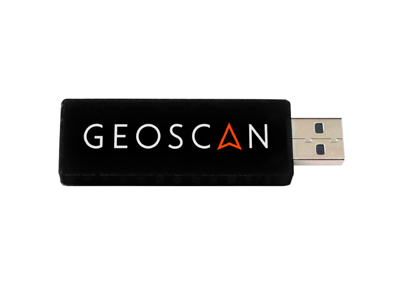

Подключение по USB модему¶
Для загрузки программ на "Пионер", помимо USB, может использоваться беспроводное соединение. Для подключения необходим радиомодем, подключаемый в любой свободный USB порт компьютера.
- Подключите "Пионер" к компьютеру с открытой программой Pioneer Station кабелем USB и запомните номер канала, отобразившийся в поле телеметрии справа от авиагоризонта.
- В меню "Настройки" выберите пункт "Настроить модем". В открывшемся окне сохраните номер канала, который запимнили при выполнении предыдущего шага.
- Выберите квадрокоптер который хотите подключить по данному каналу и нажмите ОК.
- В дальнейшем для подключений "Пионера" к компьютеру после запуска Pioneer Station в меню "подключение" выбирайте вариант "По радиомодему". При этом на плату должно быть подано питание от оcновной батареи, либо от стороннего источника по кабелю USB.